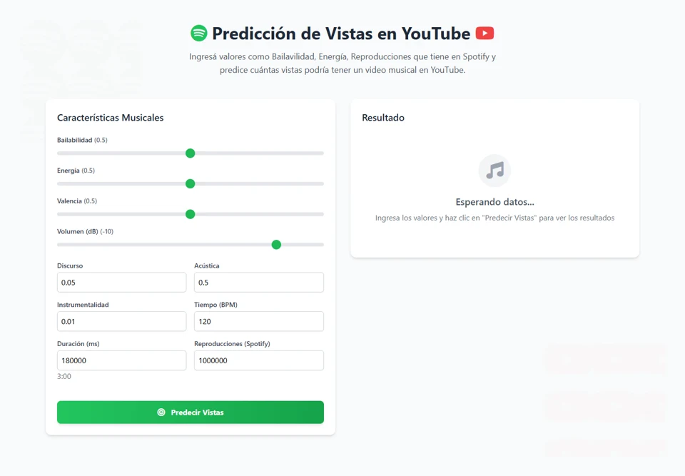

MÚSICA · MODELOS PREDICTIVOS
Spotify-YouTube Predictor
Explorar cómo las características de una canción se relacionan con sus visualizaciones en YouTube.
↳ API y aplicación con 10 variables de entrada.
Explorar el caso
Contexto y objetivo
Proyecto independiente para estimar vistas de videos musicales a partir de características de Spotify y presentar el resultado en una interfaz web.
Fuente y preparación de datos
La aplicación recibe 10 variables: bailabilidad, energía, valencia, volumen, discurso, acústica, instrumentalidad, tempo, duración y reproducciones. La fuente exacta del dataset y su limpieza están pendientes de documentar.
Metodología y herramientas
El código público carga un modelo serializado y expone una API de predicción con Flask y NumPy. Interfaz con visualización en D3.js. El código del modelo está disponible en GitHub.
Resultados y limitaciones
Aplicación pública con formulario y vista de resultados. No se publica una métrica de rendimiento: falta reproducir la evaluación y verificar la partición de datos. Las estimaciones no garantizan la popularidad de una canción.
Conclusión
El proyecto conecta un modelo en Python con una aplicación que permite explorar sus resultados.